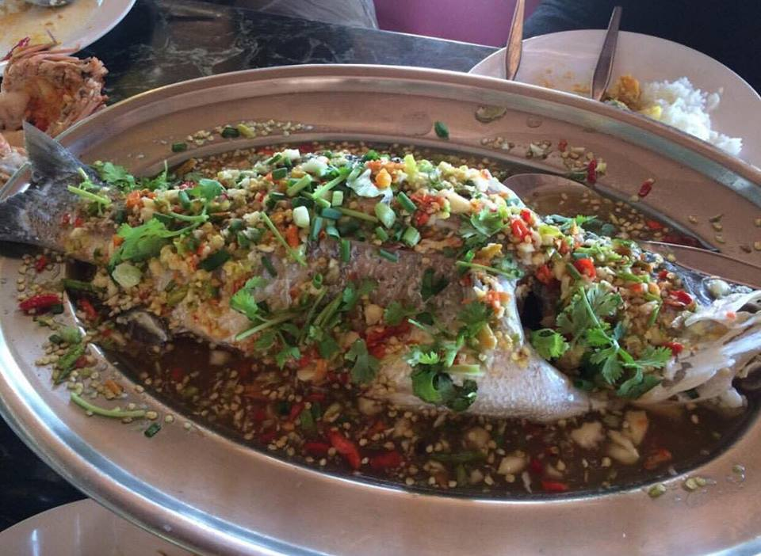
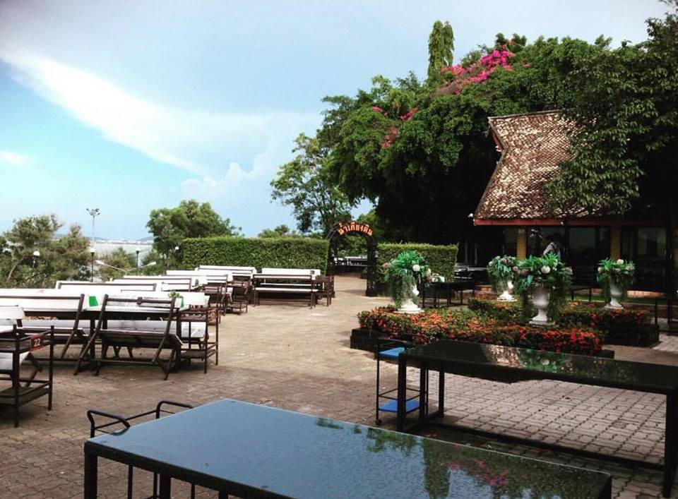

สำหรับร้านอาหารน้ำเคียงดินเปิดให้บริการมาแล้วเป็นเวลากว่า 1 ปี โดยคุณภัทราพรรณ ภัทรนิตย์ ได้เปิดเผยกับแมวละเมอว่า ร้านน้ำเคียงดินที่ตั้งอยู่บริเวณทะเลสาบสงขลานั้นถือเป็นข้อได้เปรียบเพราะเชื่อว่าอาหารอร่อยควรอยู่เคียงข้างบรรยากาศที่ดี วิวสวย มองเห็นเมืองสงขลาได้โดยรอบเคียงข้างกับธรรมชาติอันสดชื่นหากต้องการเก็บความโรแมนติกสำหรับคู่รักระหว่างฮันนีมูนที่นี่สามารถจัดให้ได้เพราะมองเห็นพระอาทิตย์ตกดินได้อย่างชัดเจนเรียกได้ว่า บิ้วอารมณ์กันตั้งแต่ก่อนเข้าร้านกันเลยทีเดียว
 เปิดบริการ: เปิดให้บริการทุกวันตั้งแต่เวลา 10.00 – 22.00 น.
ที่ตั้ง: 59/2 หมู่ 1 ต.เกาะยอ อ.เมือง จ.สงขลา